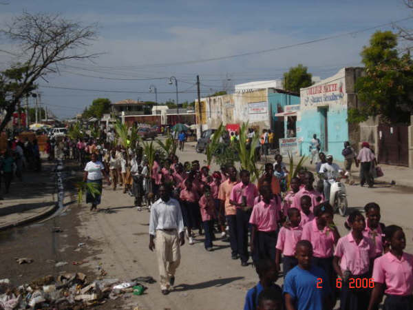

Bienvenido al sitio de Tierra de los jóvenes

Este sitio web pretende educar a las y los jóvenes de todo el mundo sobre la importancia de los árboles y de la reforestación, particularmente a través de la promoción de tecnologías locales a pequeña escala, de la conservación y del disfrute de los recursos.
Nuestro objectivo

Que estas técnicas de reforestación simples y de bajo costo puedan ser asumidas por los jóvenes, y que a largo plazo, los lugares boscosos y arbolados se conviertan en lugares de aprendizaje y de vida de la comunidad en un medio ambiente sano.
Sobre todo, esperamos que el mayor número de jóvenes posibles puedan iniciar sus secciones locales y hacer de Terre des Jeunes un movimiento ecologista mundial. Todo el mundo está invitado a hacer su parte, por pequeña que sea.
Te deseamos una buena vivita del sitio (por el momento, en mayor parte en francés; contáctenos si quieren ayudarnos a traducirlo!).
En “Acciones Concretas” encontrarás el retrato de nuestras acciones. Puede servir para inspirar a cualquier grupo de jóvenes (y no tan jóvenes) en todo el mundo.
Venga a compartir la energía y la valentía de las secciones locales de Terre des Jeunes de todo el mundo.
Cómo participar. ¿Terre des Jeunes te interesa? ¿Te gustaría participar como grupo o individualmente? ¿Estás interesado/a en hacernos una donación?
Merci à notre commanditaire .gif) :
: